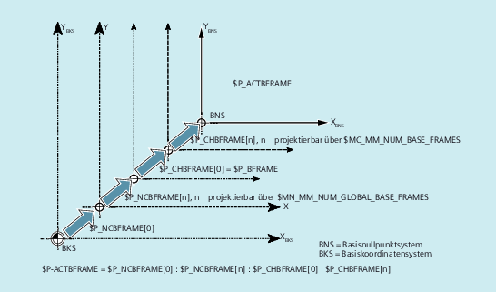
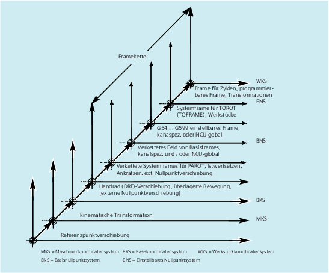

Im Kanal wirksame Frames werden vom Teileprogramm über die betreffenden Systemvariablen dieser Frames eingegeben. Hierzu gehören auch Systemframes. Über diese Systemvariablen kann im Teileprogramm das aktuelle Systemframe gelesen und geschrieben werden.
Übersicht
Aktuelle Systemframes | für: |
$P_PARTFRAME | TCARR und PAROT |
$P_SETFRAME | Istwertsetzen und Ankratzen |
$P_EXTFRAME | Externe Nullpunktverschiebung |
$P_NCBFRAME[n] | Aktuelle globale Basisframes |
$P_CHBFRAME[n] | Aktuelle Kanal-Basisframes |
$P_BFRAME | Aktueller 1. Basisframe im Kanal |
$P_ACTBFRAME | Gesamt-Basisframe |
$P_CHBFRMASK und $P_NCBFRMASK | Gesamt-Basisframe |
$P_IFRAME | Aktueller einstellbarer Frame |
Aktuelle Systemframes | für: |
$P_TOOLFRAME | TOROT und TOFRAME |
$P_WPFRAME | Werkstückbezugspunkte |
$P_TRAFRAME | Transformationen |
$P_PFRAME | Aktueller programmierbarer Frame |
Aktuelles Systemframe | für: |
$P_CYCFRAME | Zyklen |
P_ACTFRAME | Aktueller Gesamtframe |
FRAME-Kettung | Aktuelles Frame setzt sich aus dem Gesamt-Basisframe zusammen |
Über die Systemvariable $P_NCBFRAME[n] können die aktuellen globalen Basisframe-Feldelemente gelesen und geschrieben werden. Das resultierende Gesamt-Basisframe wird durch den Schreibvorgang im Kanal eingerechnet.
Der geänderte Frame wird nur in dem Kanal, in dem der Frame programmiert wurde, aktiv. Soll der Frame für alle Kanäle einer Steuerung geändert werden, muss gleichzeitig $P_NCBFR[n] und $P_NCBFRAME[n] beschrieben werden. Die anderen Kanäle müssen dann noch den Frame mit z. B. G54 aktivieren. Beim Schreiben eines Basisframes wird der Gesamt-Basisframe neu berechnet.
Über die Systemvariable $P_CHBFRAME[n] können die aktuellen Kanal-Basisframe-Feldelemente gelesen und geschrieben werden. Der resultierende Gesamt-Basisframe wird durch den Schreibvorgang im Kanal eingerechnet. Beim Schreiben eines Basisframes wird der Gesamt-Basisframe neu berechnet.
Über die vordefinierte Framevariable $P_BFRAME kann der aktuelle Basisframe mit dem Feldindex 0, der im Kanal gültig ist, im Teileprogramm gelesen und geschrieben werden. Der geschriebene Basisframe wird sofort eingerechnet.
$P_BFRAME ist identisch mit $P_CHBFRAME[0]. Die Systemvariable hat standardmäßig immer einen gültigen Wert. Gibt es kein kanalspezifisches Basisframe, wird beim Schreiben oder Lesen der Alarm "Frame: Anweisung unzulässig" ausgegeben.
Die Variable $P_ACTFRAME ermittelt das verkettete Gesamt-Basisframe. Die Variable ist nur lesbar.
$P_ACTFRAME entspricht:
$P_NCBFRAME[0] : ... : $P_NCBFRAME[n] : $P_CHBFRAME[0] : ... : $P_CHBFRAME[n].
Über die Systemvariable $P_CHBFRMASK und $P_NCBFRMASK kann der Anwender auswählen, welche Basisframes er in die Berechnung des "Gesamt"-Basisframes mit einbeziehen möchte. Die Variablen können nur im Programm programmiert werden und über BTSS gelesen werden. Der Wert der Variablen wird als Bitmaske interpretiert und gibt an, welches Basisframe-Feldelement von $P_ACTFRAME in die Berechnung einfließt.
Mit $P_CHBFRMASK kann vorgegeben werden, welche kanalspezifischen Basisframes, und mit $P_NCBFRMASK, welche globalen Basisframes eingerechnet werden.
Mit der Programmierung der Variablen werden der Gesamt-Basisframe und der Gesamt-Frame neu berechnet. Nach Reset und in der Grundeinstellung ist der Wert von $P_CHBFRMASK und $P_NCBFRMASK wie folgt:
$P_CHBFRMASK = $MC_CHBFRAME_RESET_MASK
$P_NCBFRMASK = $MC_CHBFRAME_RESET_MASK
Beispiel:
$P_NCBFRMASK = 'H81' ;$P_NCBFRAME[0] : $P_NCBFRAME[7]
$P_CHBFRMASK = 'H11' ;$P_CHBFRAME[0] : $P_CHBFRAME[4]
Über die vordefinierte Framevariable $P_IFRAME kann der aktuelle einstellbare Frame, welcher im Kanal gültig ist, im Teileprogramm gelesen und geschrieben werden. Der geschriebene einstellbare Frame wird sofort eingerechnet.
Bei globalen einstellbaren Frames wirkt der geänderte Frame nur in dem Kanal, in dem der Frame programmiert wurde. Soll der Frame für alle Kanäle einer Steuerung geändert werden, muss gleichzeitig $P_UIFR[n] und $P_IFRAME beschrieben werden. Die anderen Kanäle müssen dann noch den entsprechenden Frame mit z. B. G54 aktivieren.
$P_PFRAME ist der programmierbare Frame, der sich aus der Programmierung von TRANS/ATRANS, G58/G59, ROT/AROT, SCALE/ASCALE, MIRROR/AMIRROR bzw. aus der Zuweisung von CTRANS, CROT, CMIRROR, CSCALE an den programmierbaren FRAME ergibt.
Aktuelle, programmierbare Framevariable, die den Bezug zwischen dem einstellbaren Nullpunktsystem (ENS) und dem Werkstückkoordinatensystem (WKS) herstellt.
Der aktuelle resultierende Gesamtframe $P_ACTFRAME ergibt sich nun als Verkettung aller Basisframes, dem aktuellen einstellbaren Frame und dem programmierbaren Frame. Der aktuelle Frame wird immer dann aktualisiert, wenn sich ein Frameanteil ändert.
$P_ACTFRAME entspricht:
$P_PARTFRAME : $P_SETFRAME : $P_EXTFRAME : $P_ACTBFRAME : $P_IFRAME :
$P_TOOLFRAME : $P_WPFRAME : $P_TRAFRAME : $P_PFRAME : $P_CYCFRAME
Der aktuelle Frame setzt sich aus dem Gesamt-Basisframe, dem einstellbaren Frame, dem Systemframe und dem programmierbaren Frame gemäß oben angegebenen aktuellen Gesamtframe zusammen.
Siehe auch:
Globale Frames ($P_NCBFR, $P_UIFR)
Kanalspezifische Frames ($P_CHBFR, $P_UBFR)